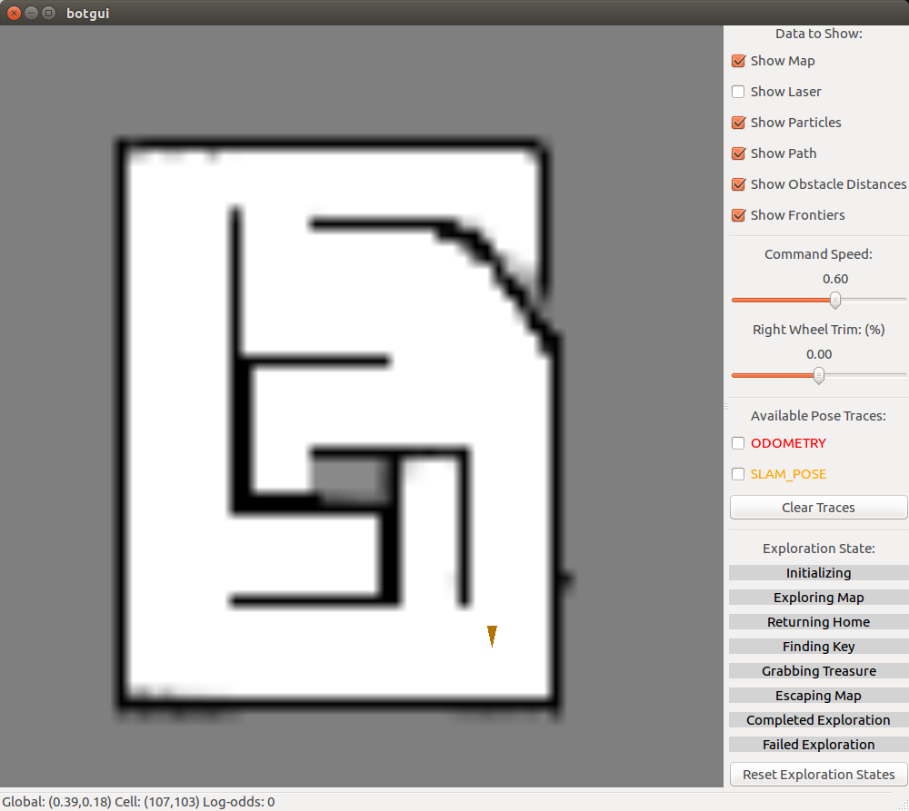
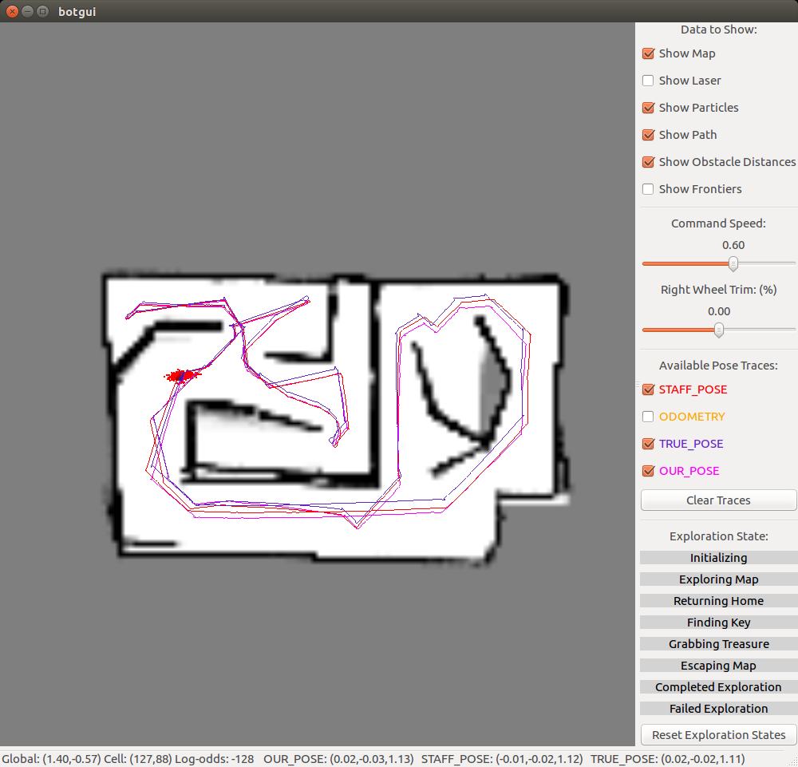
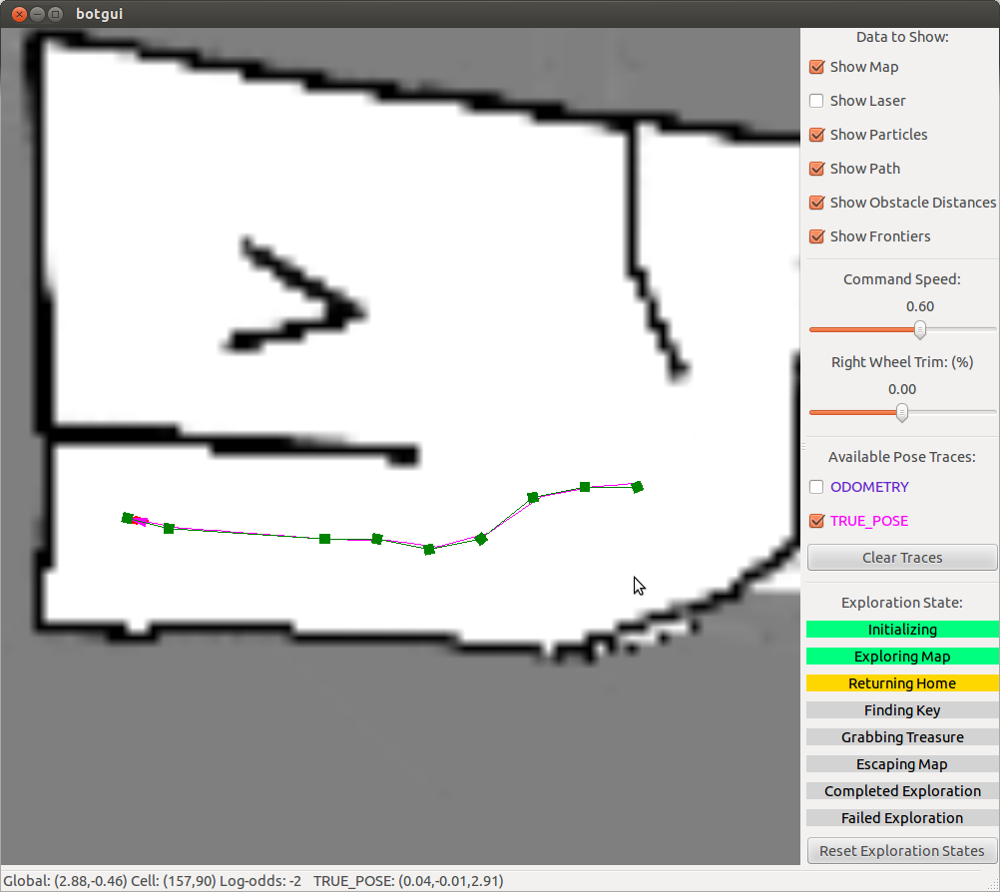

Welcome to my senior project. I've been waiting to take my senior design for years. I even switched my major just because I know this is the only senior design class I am interested in. And here I am, taking EECS 467 Autonomous Robotics as my last class for my college year
Well, enough excitement. The first half semester of this class, we formed a group of four and are required to finish the first two labs as everybody else. The first task is called "setpoint challenge" where we need to command the robot the go along a 1m by 1m square path. The task requires us to implement robot odometry from robot encoder readings, motion planner that can turn command position into robot target action, and PID controller for robot position and velocity.
The actual implementation can be found at our gitlab directory but due to the honor code issue, I can't link the whole repository here. But here is a snippet that would give you some implementation detail
Setpoint Challenge
The odometry given by the wheel encoder is inaccurate and the error accumulate while the robot is driving. Therefore, in order to keep track of the robot actual location for the pid controller, we need some correction methods. Luckily, for this part of the project, we are given the true robot pose calculated by the SLAM algorithm and use it to correct the error of the odometry
We have three PID controller for the system. One is for when the robot is turning 90 degree. One is for the velocity control of the robot when driving straight and the other one is for slightly tuning the robot angle to guarantee that the robot is moving straight.
After tuning the PID controller gains, our robot can finally move in a controlled style. You can see the video below
Escape Challenge
The escape challenge requires the robot to autonomously navigate through an unknown maize and get to the commanded location. Then we are going to remove a wall of the maze and the robot has to detect the removed wall and eventually escape the maize.
Occupancy grid
We generate the occupancy grid as the mapping for the environment. The occupancy grid is generated using the laser scan given by the lidar on the top of the robotic car. We follow the Bresenham algorithm to rasterize the line segment of laser scan between the starting point(robot location) and the lidar beam endpoints. The RPlidar is a low cost 360 degree 2D scanner with a scan rate of 5.5 Hz. The map is generated as follows. 
SLAM
Simultaneous Localization And Mapping, short for SLAM is one of the most common techniques used in robotics for robot to navigate in an unknown environment. In this project, we used Occupancy grid method to generate the map and particle filter method to localize the robot. We keep iterating between using new laser scan to update the map and particle filter to update the location of the robot. Particle filter implementation is based on Monte Carlo algorithm. Each particle represents the possible pose of the robot. It can be broken down into three parts: Action model, sensor model and importance sampling.
Action model takes the input of robot odometry and current particles and estimate the new pose of the particles when robot moves. There are four parameters we need to tune, which add the noise to the robot pose estimation. The new particles represents the proposal distribution of the robot current pose
Sensor model takes the current map, current particles and current laser scan as inputs and applies the laser scan to the pose of each particle to evaluate the probability of each particle with current mapping.
Parameters: When the endpoint matches the occupied grid, we increase the particle by a large number (alpha_1) to indicate this is more likely to be the robot true pose. When looking at the neighbor of the end point on the occupied grid, we give the particle a medium value (alpha_2) to indicate that it is reasonably possible to be the robot true pose. When the end point does not hit any occupied grid, then it indicates the particle is less likely to be the robot true pose. Therefore, we give it a very small number (alpha_3).
Change in algorithm: According to Probabilistic Robotics after we calculate the laser end point, we need to find out the closest occupied grid cell and calculate the distance in between. However, this step is computationally expensive and does not work for real time SLAM. Therefore, we improve the algorithm by assigning an absolute value to the particle based on how close the endpoint is to the occupied grid.
Importance sample is a techniques to resample the data based on it's original(different) distribution. After estimate the probability of the particles, we resample the particle so that there are more data at the location with high probability comparing to the number of data at locations with low probability. Then we use the mean of the particles as the estimation of the robot pose
The SLAM yields the following result 
A star path planning
We need to plan a path from robot current location to the target location. We need to find the shortest path between the two location as well as avoid the obstacles and ignore the gap that's too small for the robot to drive through. The algorithm we used is A-star.
Our implementation uses boost's fibonacci_heap heap implementation as our priority queue because of one key implementation detail. Boost's implementation has the concept of handles (essentially pointers) to objects in the fibonacci_heap. This is the only parameter to a method update() that forces the fibonacci_heap to update with the new value of the object. This allowed us to update the fscore of cells that are in the heap, and then to update the heap. To keep track of all of our cells, we had a large vector that mapped a grid cellIndex to a handle in fibonacci_heap, or null.
In the actually situation, A star gives the path that is usually too zigzag for the motion controller. Therefore, we throw away every 4 out of 5 poses and that helps to smooth out the robot motion. The following graph shows how the robot moves along the planned path. 